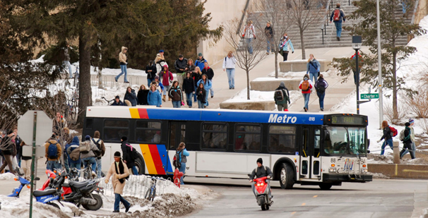

My Experiences with Madison Metro Transit as a UW-Madison Student
Paige Gahagan | November 15, 2023

Like many students attending the University of Wisconsin-Madison, I rely heavily on the bus transportation of Madisons Metro Transit. I live on the outskirts of campus and take the bus to class every day. Now a junior, I got my first bus pass at the beginning of my sophomore year. It was easy. I simply picked one up at Union South after swiping my Wiscard. Before the bus system was redesigned, I had an easier time getting to and from class. I could take more routes (8, 15, or 70) while many of the new routes (A, B, D, F, G, J and O) are of no use to me. They do not serve the southeast side of campus where many students reside. Rather, I rely heavily on Routes 38 and C. However, the 38 only comes every 30 minutes, not particularly useful since you can miss it when it arrives early. Usually, your class is less than 30 minutes later but it is too late to walk. So it is a struggle which will get worse when winter comes. Although there sometimes is an additional 38 bus, it is unscheduled and not on Google Maps. You have no idea it is coming. That is not particularly useful. On campus, the 80, 82, and 84 bus routes are extremely helpful during the day. They allow me to get from class to class faster and efficiently. Late at night, the 81 is also very helpful. I can study at the library and then ride back to my house without having to walk by myself late at night. Comment about Google Maps: I like using the app to figure out when buses are going to arrive at stops and such. However, it is unhelpful for it to say that the bus is arriving on time one minute but for it to say that the bus will arrive 4 minutes early the next minute. Could there be a more helpful app for students and the general public? It would improve students' experience with the buses if there were enhancements to both bus frequency and capacity, especially during such peak hours as after 11:00 classes. Another improvement that could make bus transportation more appealing would be to invest in more modern systems not only a better app but also being able to display ones bus pass right on ones phone (it is frustrating to forget or misplace your bus pass). Overall, my experiences with Madisons Metro Transit bus system have been both positive and negative. The bus makes getting to and from class incredibly faster and easier. Friendly bus drivers have brightened my day. However, there is also room for improvement that could make bus transportation much more efficient and reliable for UW-Madison students who rely heavily on this form of transportation. |